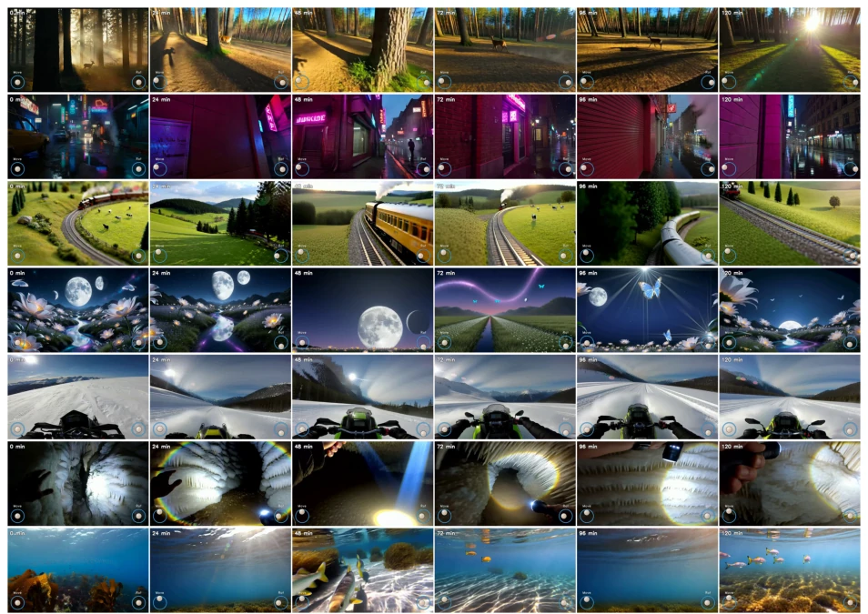
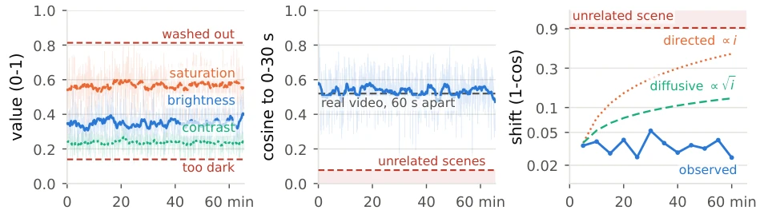
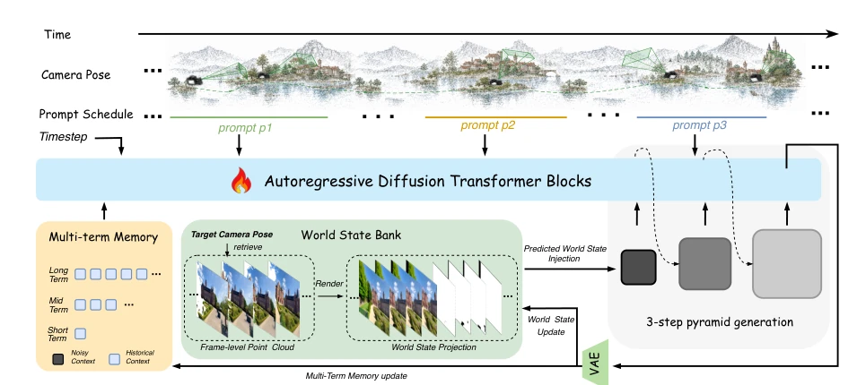
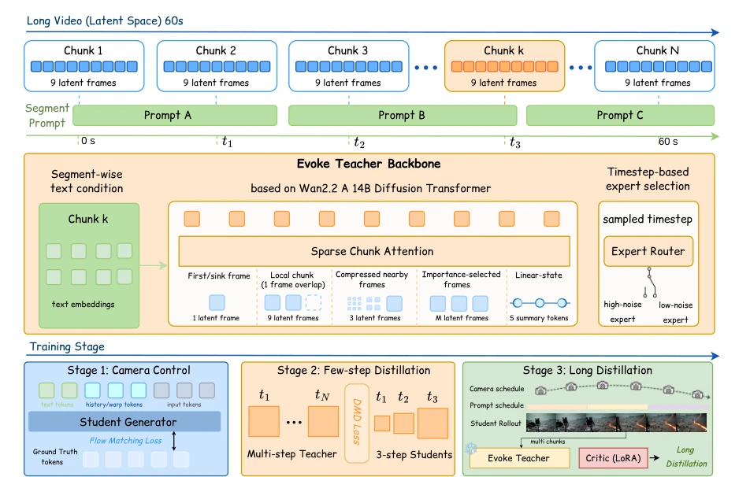
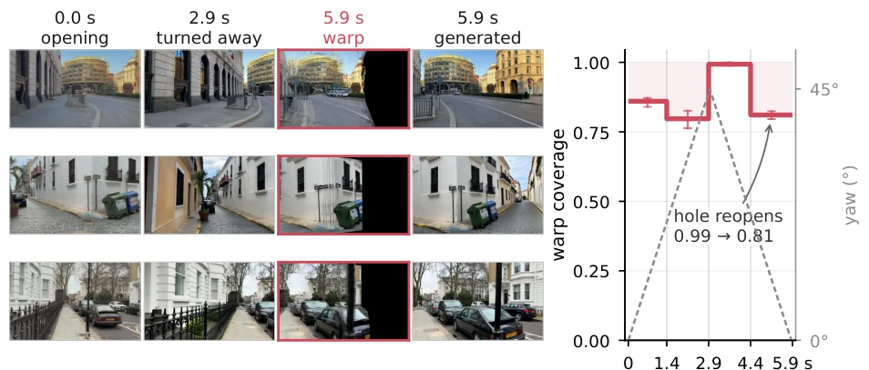
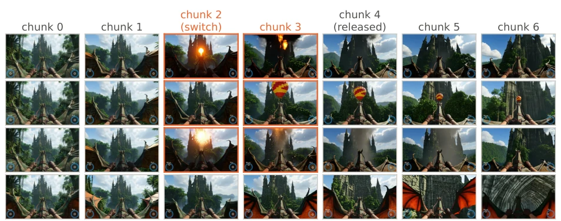
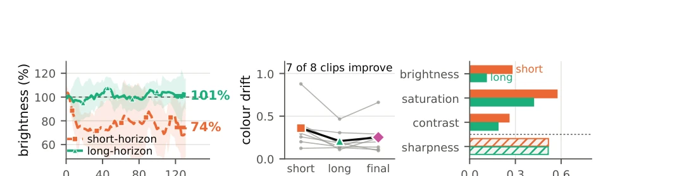
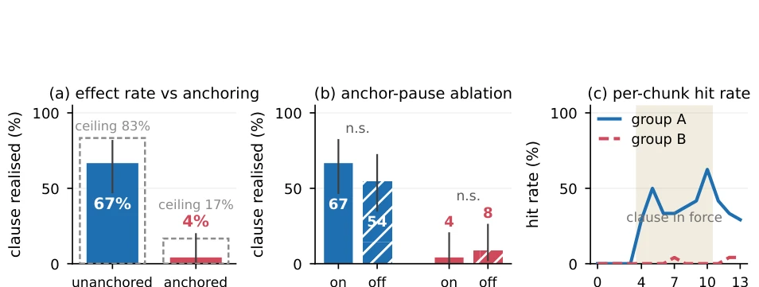
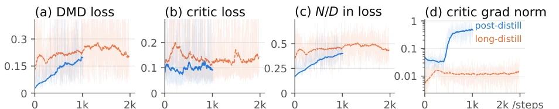
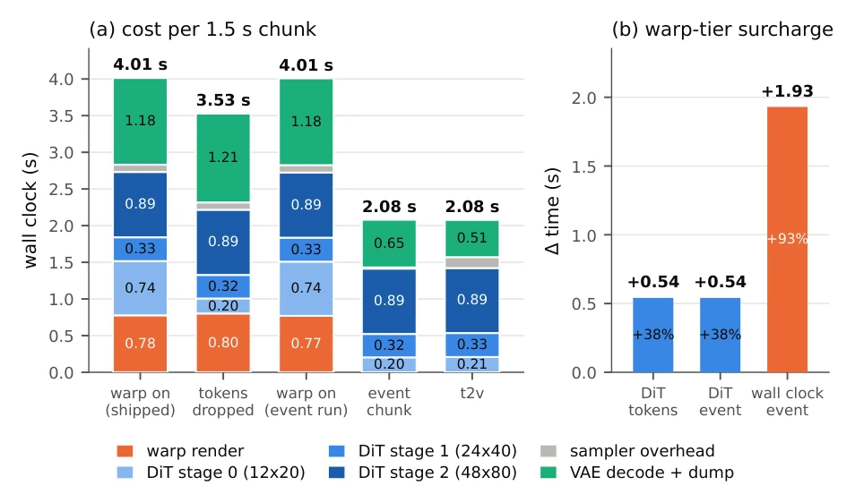

Evoke attempts to address the memory inflation pain point of interactive world models using an "External World State Bank". This strategy is indeed clever, removing geometric memory from the denoiser to maintain a constant context budget. However, "Endless World" is somewhat exaggerated, as the geometric bank only stores 90 seconds; beyond that, the model must guess, and non-rigid objects are estimated to fail. 3-step distillation without CFG still achieves SOTA on WBench, and the efficiency is indeed appealing, but with the supervision horizon capped at 30 seconds, can it truly handle long-term drift in hour-level generation? The two-hour generation in the figure appears stable, but that involves continuous camera control; once instructions change abruptly, whether that "per-chunk condition" can withstand cumulative errors in long sequences remains questionable. In summary, engineering "linear scaling" is very appealing, but physical consistency still depends on the core capability of geometric reconstruction.
研究动机Motivation
交互世界模型需兼顾持久记忆、响应式交互与长视界生成，但这三者存在根本冲突。现有方法将历史观测作为 context 帧或 KV 缓存保留在 denoiser 内，导致每步成本随会话增长（Chen et al., 2024; Zhang and Agrawala, 2025）。窗口裁剪或缓存驱逐虽能控制成本，却牺牲了信息（Cui et al., 2025）。低延迟交互依赖少步蒸馏，但学生能力受限于教师监督的时空范围（Yin et al., 2024b）。若教师仅关注短视界，长程内容漂移（content drift）无法被检测；若仅全局提示，则无法支持会话中的指令变更。现有系统无法在保持低推理成本的同时，提供长程一致性与动态控制，亟需解耦持久状态与生成模型，并重新设计教师以支持长视界监督。
Interactive world models need to balance persistent memory, responsive interaction, and long-horizon generation, yet these three objectives fundamentally conflict. Existing methods retain historical observations as context frames or KV caches within the denoiser, causing per-step costs to grow with session length (Chen et al., 2024; Zhang and Agrawala, 2025). While window cropping or cache eviction can control costs, they sacrifice information (Cui et al., 2025). Low-latency interaction relies on few-step distillation, but student capabilities are limited by the spatiotemporal scope of teacher supervision (Yin et al., 2024b). If the teacher focuses only on short horizons, long-range content drift cannot be detected; if only global prompts are used, instruction changes during sessions cannot be supported. Existing systems cannot provide long-range consistency and dynamic control while maintaining low inference costs, urgently requiring the decoupling of persistent state and generation models, and redesigning the teacher to support long-horizon supervision.

Figure 1 Two hours of uninterrupted generation. Representative two-hour rollouts under continuous camera control, generated in three steps per chunk without classifier-free guidance. Each row shows six frames sampled uniformly over the full session, illustrating sustained coherence over hour-scale generation.

Figure 4 An hour-long session stays bounded rather than degrading. One continuous 65.5 min Evoke rollout, three steps per chunk without classifier-free guidance (2619 chunks; faint per-chunk, bold two-minute mean). (a) Color is flat over the hour. (b) Scene identity plateaus at cosine 0.523, the level real footage scores against itself 60 s apart. (c) Opening-window shift stays far below unrelated-scene drift. A stability claim, not fidelity (n = 1).
The overall architecture adopts an "External State + Long-Horizon Teacher" design. The student side is a 3-step CFG-free generator that maintains a fixed-length local history (19 latent frames), obtaining geometric memory via the External World State Bank (World State Bank). The bank is indexed by camera pose, projects generated observations back to scene geometry, and renders only regions relevant to the current viewport during retrieval, ensuring the denoiser context is independent of session duration. The teacher side is based on the Wan2.2 14B architecture, employing chunk-wise sparse attention where each block focuses only on local, a few distant frames, and linear attention global states, achieving linear computational growth. The teacher supports independent text conditions per chunk, exposing instruction changes within sessions. Training utilizes 30-second long-horizon distribution matching (DMD), combined with self-forced rollouts, to distill long-term stability and dynamic control capabilities into the student. During inference, geometric conditions are injected only at the coarsest granularity stage, accompanied by visibility masks to remove invalid tokens, achieving constant cost.

Figure 3 With bounded retention, per-step cost does not grow with session length. The camera pose reads the world state bank into the target view; the student injects that render at the coarsest of its three coarse-to-fine evaluations, alongside a short parametric history and the current text condition. The emitted chunk then updates the store and the history.

Figure 5 Chunk-wise sparse attention makes long, time-varying supervision affordable. Each query chunk of a 60 s clip attends to a fixed set of key sources and reads the text segment covering it, so attention cost grows linearly in length; the sampled timestep selects the high- or low-noise expert. Below: camera-control training and few-step distillation precede long-rollout distribution matching against the shared teacher/critic backbone.

Figure 7 The world state bank puts a place back when the camera returns. Three held-out street scenes follow one authored 5.9 s trajectory, generated by Evoke in three steps per chunk without classifier-free guidance: a 45◦turn that carries the opening view out of frame, and back. Left to right: opening view; turn endpoint; the bank’s return render; the frame generated from it—the black band is what the bank no longer holds and the model must inpaint. Right: retaining only the latest 1.5 s of geometry buys nothing while the view is new and costs 0.173 of coverage at the return. Coverage bounds recall from above; it is not a fidelity measure.
On the WBench navigation set, Evoke leads other few-step systems in video quality, scene setup, and physics group average, with Consistency remaining comparable. Performance on VBench-2.0 and VBench-Long is competitive, with 1.5s chunk generation taking 2.11s on a single H200. Long session experiments show stable lighting statistics during 65.5 minutes of generation, with content drift lower than in unrelated scenes. Ablation studies indicate the long-horizon teacher significantly outperforms the short-horizon teacher (improved brightness stability), and the 30-second supervision horizon is near saturation. The geometric bank retains 90 seconds of geometry, allowing accurate scene recovery during camera lookback, but areas exceeding the budget require model inpainting. Prompt switching experiments demonstrate support for dynamic instructions during sessions, though the success rate for switching anchor regions is relatively low.

Figure 2 Timed prompt switching modifies the sky while preserving anchored scene structure. Using the same input image, camera trajectory, and three-step CFG-free student, rows differ only in text. Rows 1 to 3 introduce a fireball, hot-air balloon, and fireworks, respectively, at chunk 2 and remove them at chunk 4 (amber borders denote active chunks); the objects appear and disappear while the castle, jungle, and dragon remain consistent. Row 4 uses a static castle prompt with no evocation.

Figure 6 A student inherits photometric stability from a long-horizon teacher. Two three-step students with identical distillation recipes and teachers differing only in temporal horizon; clips, trajectory, prompt, seed and inference flags are shared, so only the checkpoint differs. (a) The short-horizon student settles at 74% of its opening brightness, the long-horizon one at 101%. (b) Seven of eight clips improve (Wilcoxon p = 0.016). (c) Brightness separates the two most; sharpness not at all. Claim: exposure stability, not image quality.
其他图片Other Figures

Figure 8 A timed prompt switch introduces unanchored content; the anchored floor is not a switching property. One checkpoint over 48 schedules (n = 24 per group). Blue requests a new object in unanchored space, red requests overwriting content pinned by the source frame and warp history. (a) Unanchored clauses are realized in 67% of cases against an 83% ceiling, anchored ones in 4% against 17%—the anchored floor is mostly what this checkpoint renders at all, not the reach of switching. (b) Pausing the anchor separates neither group, but it also freezes the camera, so it does not isolate the anchor. (c) Per-chunk hit rate; shading marks assertion.

Figure 9 Both distillation stages train stably. Long-distill (Evoke Teacher, 6 × 8 GPUs, 1981 steps) and the short post-distill continuation that yields the released student; faint per-step, bold 120-step exponential moving average. (a) DMD stays bounded in both. (b) The critic converges. (c) The normalized gradient entering the loss plateaus; we release at its onset. (d) Gradient norms stay bounded across 48 GPUs and eight scheduler restarts.

Figure 10 The geometric path costs 38% of the denoiser and 93% of a recurrent step that skips it. Per-chunk wall clock on one H200 at 384×640, 3 denoising steps, CFG off; arms differ only by the named flag. (a) Warp rendering and coarsest-stage token admission are separable costs, and stages 1 and 2 are unchanged throughout—tokens, not geometry, carry denoiser cost. (b) Geometry adds 1.84 s per chunk, scaling with warp coverage: unobserved space costs less exactly where memory offers less.